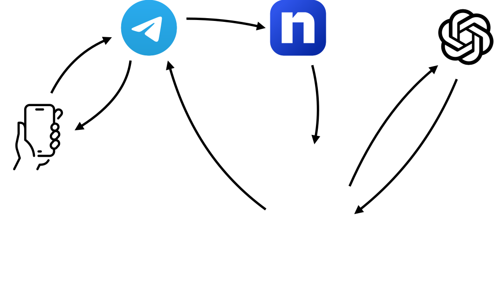

Vamos a construir paso a paso, desde cero, un bot de Telegram que responde con un modelo de lenguaje de OpenAI, usando Flask como servidor y ngrok para exponerlo a internet.
LLMAntes de tocar código conviene tener claro el camino que recorre un mensaje. Son cuatro piezas, y cada una cumple un único papel:

llm.py vive dentro de agent.py: es la clase que habla con OpenAI y recuerda la conversación de cada alumno.
Telegram entrega cada mensaje a una URL pública (ngrok) que redirige a tu máquina; tu servidor Flask (agent.py) lo recibe, se lo pasa a la clase LLM (llm.py), que consulta a OpenAI, y la respuesta hace el camino de vuelta hasta el chat.
python3 --version).La práctica se apoya en tres ficheros principales, cada uno con una responsabilidad distinta:
agent.py servidor Flask + integración con Telegramllm.py clase LLM: habla con la API de OpenAIprompt.txt instrucciones del sistema, la personalidad del agenteSeparar el prompt en su propio fichero de texto es deliberado: permite cambiar el comportamiento del agente, el tono, los datos que conoce o sus instrucciones, sin tocar ni una línea de código.
Crea una carpeta para el proyecto, un entorno virtual y las dependencias:
mkdir agente-telegram && cd agente-telegram
uv init
uv add flask requests python-dotenv openaiCongela las versiones en un fichero para que la práctica sea reproducible en cualquier máquina:
uv freeze > requirements.txtTelegram delega la creación de bots en otro bot: @BotFather.
@BotFather./newbot.Asistente PLN, y un username que termine en bot, por ejemplo pln_ulpgc_bot.123456789:AAExxxxxxxxxxxxxxxxxxxxxxxxxxxxxxxx. Guárdalo: es la credencial que identifica a tu bot.Advertencia: ese token equivale a una contraseña. Cualquiera que lo tenga puede controlar tu bot. No lo escribas directamente en el código ni lo subas a un repositorio público. En el paso 4 se explica dónde guardarlo.
platform.openai.com e inicia sesión.sk-... y solo se muestra una vez.Ahora tienes dos secretos: el token de Telegram y la clave de OpenAI. Escribirlos directamente dentro de agent.py o llm.py es la manera más rápida de que acaben filtrados, por ejemplo, en cuanto el proyecto se suba a GitHub.
Crea un fichero .env en la raíz del proyecto:
TELEGRAM_TOKEN=tu_token_de_botfather
OPENAI_API_KEY=sk-tu_clave_de_openai
NGROK_URL=https://tu-subdominio.ngrok-free.appY un .gitignore que lo excluya de cualquier commit:
.env
venv/
__pycache__/Con python-dotenv, ambos ficheros pasan a leer las claves así, en vez de tenerlas escritas dentro.
llm.pyimport os
from dotenv import load_dotenv
from openai import OpenAI
load_dotenv()
OPENAI_API_KEY = os.environ["OPENAI_API_KEY"]agent.pyimport os
from dotenv import load_dotenv
load_dotenv()
TELEGRAM_TOKEN = os.environ["TELEGRAM_TOKEN"]
NGROK_URL = os.environ["NGROK_URL"]Este paso no cambia el comportamiento del bot; solo cambia dónde se encuentran las claves. Es la diferencia entre una práctica que se puede compartir o subir a un repositorio y una que no.
prompt.txt es la primera instrucción que recibe el modelo, antes de cualquier mensaje del usuario. Define quién es el agente y qué sabe.
prompt.txtEres un agente personal que da servicio a la asignatura llamada
"Procesamiento del Lenguaje Natural (PLN)" de la Universidad de
Las Palmas de Gran Canaria. Tu misión es responder a preguntas
relacionadas con la asignatura.
La información de la que se dispone es:
Profesor:
- Nombre: Cayetano Guerra Artal
- Despacho: Edificio de Informática, despacho 3-3
Horario de la asignatura:
- Lunes: 8:30 a 9:30 clase de teoría
- Martes: 11:30 a 13:30 clase de teoría
- Viernes: 11:30 a 13:30 clase de prácticas en laboratorioEste texto se envía como mensaje de rol system en cada conversación. Es el lugar natural para añadir más contexto de la asignatura: temario, bibliografía, fechas de examen, enlaces al campus virtual, etc. Cuanto más preciso el prompt, mejor.
LLM - hablar con OpenAIllm.py encapsula toda la conversación con el modelo. Su pieza clave es active_users: un diccionario que guarda, para cada chat_id de Telegram, el historial completo de mensajes.
llm.pyclass LLM:
def __init__(self):
self.client = OpenAI(api_key=OPENAI_API_KEY)
self.active_users = {}
# prompt.txt se carga una sola vez, al arrancar
with open("prompt.txt", "r") as file:
self.prompt = file.read()
def chat(self, id, text):
# primer mensaje de este chat_id: arranca el historial
if id not in self.active_users:
self.active_users[id] = {"messages": [
{"role": "system", "content": self.prompt}
]}
self.active_users[id]["messages"].append(
{"role": "user", "content": text})
response = self.client.chat.completions.create(
model="gpt-4o-mini",
messages=self.active_users[id]["messages"],
temperature=1, max_tokens=256,
)
bot_response = response.choices[0].message.content
self.active_users[id]["messages"].append(
{"role": "assistant", "content": bot_response})
return bot_responseDos ideas merecen atención en clase:
chat_id tiene su propia lista de mensajes, así que el bot puede hablar con varios alumnos a la vez sin mezclar sus conversaciones.active_users vive en memoria del proceso. Si el servidor se reinicia, todas las conversaciones se pierden. Es un buen punto de partida para discutir alternativas: guardar el historial en un fichero, en SQLite o limitar cuántos turnos se conservan.agent.py expone dos rutas HTTP. Telegram nunca llama a tu bot directamente: en su lugar, envía cada mensaje nuevo mediante un webhook, una petición POST a una URL que tú registras de antemano.
| Ruta | Método | Función |
|---|---|---|
/telegram |
POST | Recibe cada mensaje entrante y responde con la contestación del modelo. |
/telegram/setwebhook/ |
GET | Le dice a Telegram a qué URL debe enviar los mensajes a partir de ahora. |
agent.py@app.route("/telegram", methods=['GET', 'POST'])
def reply_telegram():
if request.method == 'POST':
msg = request.get_json()
# Telegram distingue un mensaje nuevo de uno editado
if 'message' in msg:
m = msg['message']['text']
id = msg['message']['chat']['id']
else:
m = msg['edited_message']['text']
id = msg['edited_message']['chat']['id']
if m == '/start':
requests.get(
f"https://api.telegram.org/bot{TELEGRAM_TOKEN}/sendMessage?chat_id={id}&text=¡Hola!"
)
else:
response = chatbot.chat(id, m)
requests.get(
f"https://api.telegram.org/bot{TELEGRAM_TOKEN}/sendMessage?chat_id={id}&text={response}"
)
return Response('ok', status=200)El patrón es siempre el mismo: leer el JSON que envía Telegram, extraer texto y chat_id, pedirle una respuesta al agente y devolvérsela a Telegram con una llamada a sendMessage.
Enviar el texto como parámetro de una URL (
?text=...) funciona en la práctica, pero rompe con emojis, saltos de línea o el carácter&. Como ejercicio, sustituye esa llamada por unrequests.post(...)con el texto en el cuerpo JSON; es una mejora natural.
Telegram necesita una URL pública y con HTTPS para enviar el webhook; tu localhost:5000 no es alcanzable desde fuera de tu red. ngrok abre un túnel temporal que resuelve justo eso.
# instalar en macOS
brew install ngrok
# autenticar una sola vez, con el token de tu cuenta ngrok.com
ngrok config add-authtoken TU_AUTHTOKEN
# exponer el puerto en el que corre Flask
ngrok http 5000ngrok muestra una URL como https://6906267213b0.ngrok-free.app. Cópiala en tu .env, en la variable NGROK_URL.
En el plan gratuito, la URL de ngrok cambia cada vez que reinicias el túnel. Cada reinicio obliga a repetir el paso 9 con la nueva URL.
Con ngrok y Flask corriendo en paralelo, solo falta decirle a Telegram dónde entregar los mensajes.
# en una terminal
python agent.py
# en otra, con ngrok ya activo
ngrok http 5000Después, visita en el navegador la ruta que registra el webhook:
http://localhost:5000/telegram/setwebhook/Esa ruta ejecuta, con tus credenciales, una llamada equivalente a esta:
https://api.telegram.org/bot<TELEGRAM_TOKEN>/setWebhook?url=<NGROK_URL>/telegramUn "Success" en pantalla confirma que Telegram ya sabe a qué URL reenviar cada mensaje nuevo.
/start: debe responder ¡Hola!.agent.py: cada request de Telegram debería aparecer ahí en tiempo real.| Síntoma | Causa probable |
|---|---|
| El bot no responde nada | El webhook apunta a una URL de ngrok caducada. Repite el paso 9 con la URL actual. |
| Error 401 de Telegram | TELEGRAM_TOKEN es incorrecto o tiene espacios de más al copiarlo. |
| Error 429 de OpenAI | No hay crédito disponible en la cuenta o se ha superado el límite de peticiones por minuto. |
setwebhook devuelve Fail |
Flask no está accesible desde ngrok. Comprueba que agent.py sigue corriendo y en el mismo puerto. |
| El bot “olvida” la conversación | El servidor se reinició y active_users, al vivir en memoria, se vació. |
| Respuestas cortadas a mitad de frase | max_tokens=256 es el límite de longitud de la respuesta; auméntalo si hace falta. |